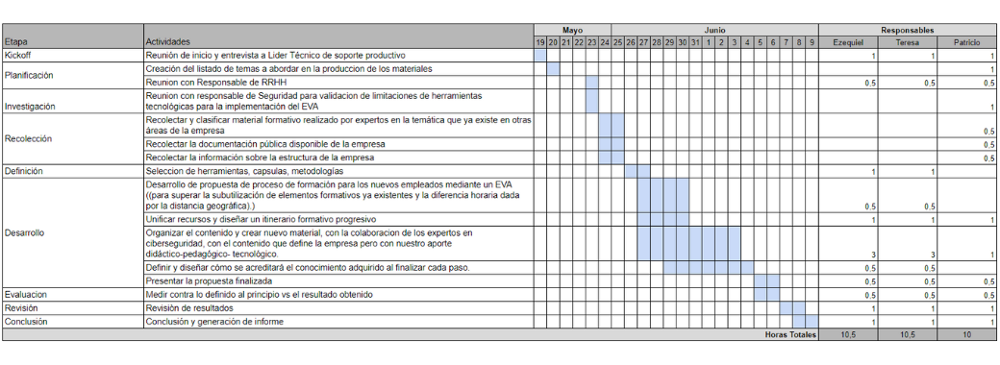

Cronograma
Planificación
La planificación inicial de la práctica la evaluamos y estimamos en base a lo que mas nos complicaría teniendo en cuenta los recursos y nuestros conocimientos. El diseño instruccional, dada la naturaleza y su complejidad técnica sería el desafío mas robusto. La implementación de un EVA nos requeriría en segundo lugar el siguiente esfuerzo mas grande. Y finalmente la recoleccion de evidencias, la documentación los relatos, el análisis y la evaluación de la práctica nos llevaría el final de las horas.
Pero, ¿Lo cumplimos?
¡Por supuesto que no! Pero no es algo que nos haya bloqueado la práctica en lo absoluto. Se alargaron los tiempos del diseño instruccional y nos llevó el doble de horas, y algunas reuniones fueron re-agendadas para fechas mas largas pero se logró realizar.
¿Qué contratiempos o ajustes tuvimos que hacer específicamente?
1. LMS: Una de las partes de la práctica que teniamos para realizar era la implementación de un LMS para unificar y organizar los recursos instruccionales que existian y diseñaríamos para el proceso de formación.
Classroom por su rápida y flexibilidad o Moodle por la robustez y los conocimientos que tenemos en su utilización. Pero! mientras teníamos la reunión con el Director de Seguridad y privacidad de la empresa nos dimos con que no se podian instalar nuevas aplicaciones como Moodle ni podian acceder a sitios no avalados por la empresa por cuestiones de seguridad.
2. Acuerdos: Otro de los contratiemposque tuvimos fue la demora en una de las reuniones mas importante con el líder técnico del área que avalaba el contenido por cuestiones de agenda. Eso hacia que se demorara una semana la práctica porque era quien definia de manera categórica los contenidos propuestos despues de la entrevista inicial.
¿Que hicimos para resolverlo?
1. Con respecto a las limitaciones de implementación de los LMS que conocíamos invertimos la ecuación. En la reunión comenzamos a preguntar por todos los recursos, herramientas y aplicaciones con las que trabajaban y ya tenian a mano y aprobadas por la empresa que pudieran utilizar sin limitaciones. Para nuestra suerte, la empresa utiliza aplicaciones corporativas muy variadas pero hay una de ellas, de libre distribución que ya tienen implementada, una Wiki. Cuando nos comentaron esto revisamos la misma, la documentación técnica y les preguntamos si era posible utilizar dicho recurso a lo que nos respondieron que si. Revisando la documentación técnica de la Wiki nos encontramos con que es una poderosa herramienta con muchísimas bondades para el diseño y la organización de material instruccional. No solo para textos, imagenes y videos sino que tiene carácterísticas específicas para el uso práctico de código fuente y comandos de linux, que nos serían de muchísima utilidad y resultarían de una gran ayuda para el proceso de aprendizaje. Como un punto importantea destacar, algo que logramos realizar es que la Wiki, tenga también parte de la escencia de los módulos de un LMS tradicional, ayudandonos de algunos trucos de internet logrando que se vea como un micro learning de moodle sin serlo.
2. Con respecto a las demoras en las reuniones pactadas para la defiincion de material específico decidimos rapidamente hacer una revisión de temas en internet mas los que contabamos de manera interna por la pertenencia de uno de los integrantes del grupo en la empresa y armamos un pequeño bosquejo de los módulos a diseñar para ser presentados rapidamente al líder técnico del área. Buscamos rapidamente su aprobación y vió con buenos ojos el borrador del esquema para que podamos comenzar a trabajar en el diseño y luego cuando se pudiera, ajustaríamos el contenido de hacer falta. Sobre este punto también, casi al 50% del material tuvimos que redefinir tras la reunion realizada y recortamos algunos temas que se volvían muy complejos como para ser abordados en ésta práctica y resolvimos trasladar esos recortes a ser compensados con actividades prácticas al final del proceso de formación.